«ДентАрту» — 25! · журнал «ДентАрт» 2020 №3
Народження «ДентАрту» було відповіддю на потребу української стоматології стати справді сучасною
The Birth of DentArt
Чверть століття тому, у вересні 1995 року, вийшов у світ перший номер журналу «ДентАрт». Про те, як виникла ідея заснування журналу, про перші роки його виходу розповідає Сергій Радлінський, його видавець і головний редактор.
Журналу у вересні 25 років. Я завжди згадую, що перше його число ми готували 9 місяців. Виношували, як дитину. Чому так довго? Тому що ми просто не знали, як це робиться.
Але ми мали велике бажання заснувати журнал. Чому воно виникло? Можна сказати, що «ДентАрт» народився у великому трикутнику. (Як ось сьогодні, 9 червня, о пів на другу я фотографував Місяць, Юпітер і Сатурн, які створили на невеликій ділянці нічного неба трикутник). У минулому році ми відзначали ювілей клініки-студії «Аполлонія» і говорили про те, як вона засновувалася, про нашу співпрацю з фірмою «Дентсплай ЛТД», дочірньою компанією «Дентсплай Інтернешл», яка мала вести діяльність на території країн, що раніше перебували в складі СРСР. Я працював тоді у Полтавському медичному стоматологічному інституті (з 1994 року — Українська медична стоматологічна академія), у нас були певні напрацювання в техніці реставрації зубів композитами, у «Дентсплай» були нові для нас матеріали виробництва СП «Стомадент», і ми запропонували створити навчальний центр. Це було взаємовигідне співробітництво, до того ж, воно цілком у руслі філософії «Дентсплай»: продажі через навчання. А навчання — це ми, Академія.
Керуючись цією філософією, у 1991 році ми провели перший спільний семінар, який пізніше отримав назву «ДентАрт», після цього через рік почав працювати Стоматологічний навчальний центр «Комподент». Тоді міжнародні заходи зі стоматології відбувалися хіба що в столицях, а щоб у Полтаві — це було щось неймовірне! Але так склалося. Як той трикутник Місяця, Юпітера і Сатурна — цілком правомірна асоціація.
Ми гадаємо, що навколо нас усе обертається, а насправді ми обертаємося навколо чогось більшого. Щось більше, як тепер добре видно з відстані чверті століття, — це потреба української стоматології, стоматології всіх пострадянських країн стати справді сучасною. Українській медичній стоматологічній академії теж було цікавим міжнародне співробітництво, тодішній ректор Микола Сергійович Скрипніков гаряче підтримав нашу ідею і взяв на себе багато відповідальності. Згадуючи ті роки, дивуюся його сміливості. Якби у нас щось не вийшло, ректор міг би мати великі неприємності. Але він повірив у напрямок прямої реставрації! Тоді існували тільки протезування і пломбування. Реставрації, яка робить те саме, що й протезування, але методом пломбування, раніше не було. Ми були, не скажу, що першовідкривачі, але точно першопрохідці. І про це пам'ятають і колеги, і наші перші пацієнти.
Стоматологічний навчальний центр «Комподент» відразу отримав не лише українську, а й міжнародну орієнтацію, оскільки такий напрямок був цікавим і Академії, і фірмі «Дентсплай». Почувалися ми так, як перша вчителька, коли на тебе дивляться захопленими очима. З нашого боку це було волонтерство — ми сідали у свій автомобіль і їхали в міста Харків, Донецьк, Запоріжжя, Дніпропетровськ, Одесу, Київ, Суми, Чернігів, Черкаси... Пам'ятаю, як головний стоматолог Харківської області Олег Олексійович Челяпін, відкриваючи наш семінар у Харкові, сказав: «Це не панацея, але це вирішує багато проблем. Послухаємо!»
Однак що виявилося? Ми приїхали, виступили, в залі буря емоцій, усі кажуть: «Будемо і ми так працювати!» Приїжджаємо через рік, а наші курсанти вже забули багато важливих нюансів прямої реставрації. А об'їжджати всіх постійно і вчити — це треба кидати свою роботу. Але якщо лектор сам не практикує — хто йому повірить? Він стає вже агітатором-пропагандистом, а не експертом! Ми відчули потребу частіше доходити до тих лікарів, як зараз модно говорити, фоловерів (тобто тих, що стежать за вашими напрацюваннями і йдуть за вами), частіше, ніж раз на рік чи раз на кілька років. Ось тоді й виникла ідея видання журналу. Справа нова. У той час на пострадянському просторі регулярно виходили тільки журнали «Стоматологія» та реферативний. У Києві виходили лише наукові збірники, хоча паралельно з нами і роком раніше став видаватися журнал «Новини стоматології» у Львові.
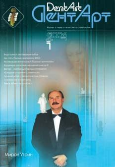
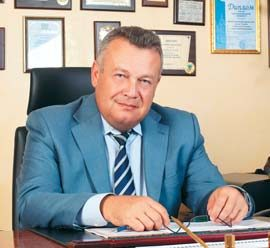
Коли ідею вже обговорили з Академією і фірмою «Дентсплай», пам'ятаю, зустрівся я з професором Валерієм Костянтиновичем Леонтьєвим. Почувши, що ми маємо намір видавати журнал про науку та мистецтво у стоматології, він сказав: «Гарна ідея. Але майте на увазі три моменти: перший — це дуже збиткова справа, тому потрібно знайти того, хто вас буде підтримувати; другий — знайдіть постійне джерело інформації і авторів, бо журнали з'являються, один номер випустили, другий, а в третьому вже нічого сказати; і третій момент — знайдіть свого читача, тому що не можна бути цікавим для всіх, визначтеся, для кого ви працюєте, хто ваші постійні читачі, які будуть підтримувати журнал». Ось такі три поради я отримав. Пізніше, у 1996 році, запитую професора Леонтьєва, який приїхав до нас на семінар «Реставрація зубів матеріалами «Дентсплай», як йому третій номер «ДентАрту». А він відповів: «Я вас вітаю! Не кожен журнал доживає до третього номера».
І ось сьогодні ми готуємо соте число журналу. Дозвольте цитату зі звернення редколегії в №1 «ДентАрту» за 1996 рік, тобто з другого випуску журналу, де задекларовано, для кого ми працюємо і з якою метою: «Передусім ми чітко визначили коло своїх потенційних читачів. Це лікарі, які займаються естетичною стоматологією. Здебільшого вони лише вчаться працювати за технологіями світового рівня. Їм потрібні знання, яких радянські вузи просто не могли дати. Наш журнал, відводячи значну частину площі для публікації методичних матеріалів, викладів і статей про досягнення світової стоматології та досвід окремих стоматологів колишнього Радянського Союзу, спробує заповнити цю прогалину. Ні, звичайно, «ДентАрт» не бере на себе функції навчального посібника, але, регулярно читаючи його, ви будете знати, як працюють лікарі у США, Англії, Німеччині, інших країнах. Знати, і — головне — скористатися їхніми досягненнями, удосконалювати свою майстерність. А ми і не приховуємо: одна з наших цілей — зробити світові досягнення в галузі стоматології доступними кожному професіоналові, завдяки чому підвищиться рівень майстерності наших дантистів, і вони зможуть розмовляти на рівних із зарубіжними колегами».
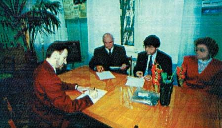
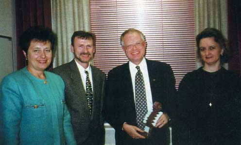
Найважче було, звичайно, з першими випусками. Академія виділила приміщення під редакцію в морфологічному корпусі. Перший номер друкували так: середину в Полтаві, у друкарні видавництва «Криниця», а обкладинку — в Лондоні, тому що в Полтаві тоді не було ні такого паперу, ні можливості отримати належні кольори. Тому обкладинку доводилося розмитнювати на кордоні, це створювало додаткові клопоти, і Ян Ватт сказав, що «Дентсплай» готовий оплатити, але треба знайти можливість друкувати обкладинку в Україні. Тираж першого номера «ДентАрту» був 1500 примірників.
Як обрали назву для журналу? «ДентАрт» — це була назва проекту, подібного до «Аполлонії», але в столиці України. Ми з одним партнером задумали відкрити в Києві клініку, навчальний центр, стоматологічне депо, і все це разом із журналом мало називатися «ДентАрт». Проект не був реалізований, і добре, тому що ми залишилися незалежними.
Із самого початку виходу журналу нас закидали статтями науковими, потрібними тим, хто захищав дисертації. Але оскільки ми мали прямий зв'язок з лікарями, то розуміли, що зерно, справді цікаве лікарям-практикам, заховане під усіма тими штампами, які змушені використовувати вчені, щоб їхні роботи визнавалися науковими. Тоді в науковому житті було багато таких штампів, тому журнал не прагнув стати ВАКівським...
Перший випуск «ДентАрту» зацікавив багатьох стоматологів, і не тільки в Україні. Мені розповіли, що завідувачка кафедри дитячої стоматології знайшла того, хто знає українську мову, і їй перекладають весь журнал. Бачив на виставці, як казахська стоматологиня гортає журнал і журиться, що не знає української. Стало зрозуміло, що журнал має читача за межами України, і тоді ми перереєстрували «ДентАрт» з правом видання українською і російською мовами та розповсюдження за межами України. Ми будували свою систему розповсюдження, передплати. У той час, коли не було інтернету в такому вигляді, як нині, соціальних мереж, друковане слово було дуже затребуваним. На піку популярності неелектронних, друкованих випусків «ДентАрт» передплачували, окрім України, ще в чотирнадцяти країнах — Білорусі, Болгарії, Вірменії, Греції, Грузії, Естонії, Ізраїлі, Казахстані, Киргизстані, Латвії, Литві, Молдові, Узбекистані, Чехії.
Цікаво, що в 1996 році ми стали друкувати журнал у Фінляндії. Наш партнер, з яким не склалося з реалізацією проекту в Києві, все ж цікавився нашими справами, а в нього були партнери у Фінляндії, і коли з цієї країни везли продукцію до Києва, була можливість привезти і видрукуваний тираж нашого журналу. Але клопітною була передача у Фінляндію так званої «білки» для друку — макета номера. Так ми надрукували три номери журналу, а потім почалося наше багаторічне співробітництво з видавництвом «Бліц-Інформ» у Києві.
Першими авторами «ДентАрту» були викладачі Української медичної стоматологічної академії (м. Полтава), Дніпропетровської державної медичної академії, учені Центрального науково-дослідного інституту стоматології, Ян Ватт — регіональний директор фірми «Дентсплай Інтернешл». Рубрику «Своя справа» у першому випуску журналу започаткував лікар-стоматолог Лео Юрків, українець за походженням, який народився, жив і працював в Англії. У статті «Стоматологічний кабінет у Великобританії», а потім і в інших публікаціях він поділився своїм досвідом створення та розвитку стоматологічної клініки «Jurkiws Associates». Левко Юрків у своїх публікаціях та виступах на семінарах застерігав стоматологів, які починають свою справу, від бездумного копіювання першої успішної клініки. Навів приклад, коли в Англії створили клініку, вона була успішною, всі щасливі — і стоматологи, і пацієнти, і держава. Відкрили другу таку саму клініку, а вона вже не така успішна. Зробили третю клініку — банкрути... Тобто стоматологія — це бізнес, який не піддається простому масштабуванню. Там, де немає душі, де немає креативного і відповідального стоматолога, а є тільки бізнес, — стоматологія вмирає. Я щасливий, що ми маємо свою «Аполлонію», щасливий і тим, що ідея «ДентАрту» живе — у 100 випусках нашого журналу, у наших семінарах.
У першому номері «ДентАрту» моєю статтею «Реставрація зубів матеріалами «Дентсплай» була започаткована рубрика «Практичні курси», яка залишається провідною всі ці роки. Третю сторінку обкладинки ми віддали репродукціям картин, адже живопис та інші техніки образотворчого мистецтва доречні в дизайні стоматологічних кабінетів і реєстратур стоматологічних клінік. Неодноразово цю третю сторінку обкладинки намагалися забрати для своєї реклами наші рекламодавці, але ми зберегли цю традицію, тому що на першому місці має бути душа журналу.
Пізніше, коли сучасні матеріали входили в практику все більшої кількості українських лікарів, журнал ніс широкій стоматологічній спільноті досвід умілого їх застосування, звертаючи увагу на важливі деталі, про які у звичайній інструкції не розкажеш. Так у журналі з'явилася рубрика «Практичний досвід». Ми запрошували до співпраці авторів, які могли б донести нашим стоматологам міжнародний досвід, щоб наша стоматологія рухалася в напрямку глобалізації. Серед авторів публікацій у перших випусках нашого журналу — директор Європейської клінічної дослідницької групи «Дентсплай» доктор Андреас Грютцнер, доктор Марк Вулфорд — викладач Об'єднаного медичного і стоматологічного коледжу Гая і Святого Томаса (Лондон, Велика Британія), Курт Бухмюллер — головний менеджер з навчання фірми «Maillefer» (Швейцарія), уродженець Полтави Володимир Новіков — лікар-консультант фірми «Дентсплай», який тоді працював у Ризі і розповів на сторінках «ДентАрту», що таке сучасна стоматологічна клініка в Латвії, доктор Стелла Авдишева — генеральний директор клініки «Стедлі» (Київ), професор Лариса Хоменко — віцепрезидент Асоціації стоматологів України, головний дитячий стоматолог України... З дозволу BDJ — Британського стоматологічного журналу — ми передруковували статті про нові стоматологічні матеріали і технології.
Крім публікацій на дуже серйозні теми, у перших числах журналу під рубрикою «Сміх крізь зуби» друкували карикатури і гумористичні висловлювання про стоматологів та лікування зубів. Наприклад, такі: «Розумом ти можеш і не сяяти, але зубів красою — зобов'язаний!»
Першим науковим редактором журналу був професор Павло Максименко, до редакційної колегії перших років видання журналу входили професори Таїсія Скрипникова, Лія Григор'єва, Віталій Міщенко, В'ячеслав Рубаненко. Викладач Академії Валентина Мухіна перекладала статті з англійської, підготовку журналу до друку вели журналісти Ганна і Юрій Волкови, верстальник Станіслав Хорєв, оператор комп'ютерного набору Валентина Каркач, художник Олег Перепелиця, фотограф Микола Боровик.
Я щиро вдячний всім, хто брав участь у первинному становленні журналу «ДентАрт», як і тим, хто нині продовжує цю місію — давати життя журналу «ДентАрт», випуск за випуском, чиї імена ви можете знайти на титульній сторінці під заголовком «Над номером працювали»! Дякую всім читачам журналу «ДентАрт» за співпрацю і вірність друкованому слову в сучасній стоматології! Будемо жити і працювати далі в ім'я стоматологічного здоров'я людства!
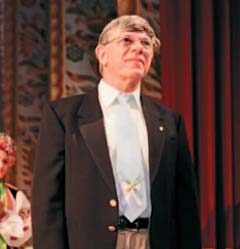
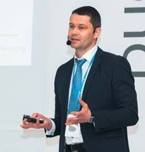
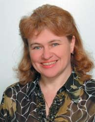
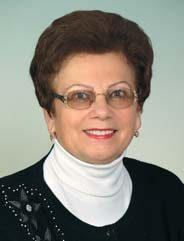
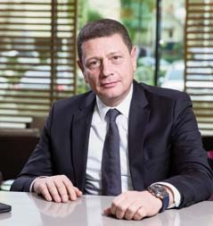
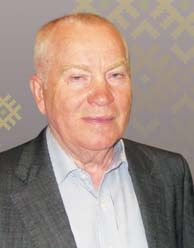
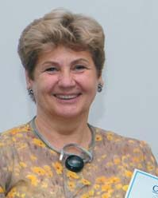
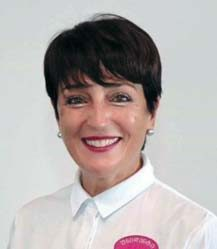
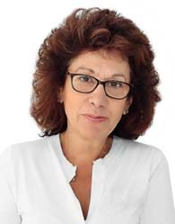
Привітання з 25-річчям «ДентАрту»
Вячеслав Ждан, ректор Української медичної стоматологічної академії, професор
Коли йдеться про медиків, зокрема, про студентів медичних навчальних закладів, тобто людей, які тільки розпочинають свій шлях у медичній галузі, — потреба в професійній інформації завжди є нагальною. Чи мало б нинішнє покоління відомих лікарів-практиків і науковців такі вагомі досягнення, якби вони попередньо не були озброєні відповідною інформацією про здобутки видатних учених, що стояли біля витоків сучасної медичної науки? На меморіальній стіні біля могили видатного хірурга Миколи Скліфосовського викарбувані його пророчі слова, які западають у душу: «Народ, який уміє шанувати пам'ять своїх видатних предків, має право спокійно дивитися в майбутнє»… Наші викладачі приходять до меморіалу М. В. Скліфосовського зі своїми студентами у пам'ятні дати життя і діяльності відомого ученого. Його наукова спадщина є гарним прикладом відданого служіння медицині. А Українська медична стоматологічна академія, якій невдовзі виповниться 100 років, вірна кращим традиціям у навчанні і професійному становленні майбутніх лікарів.
Зокрема, уже чверть століття Українська медична стоматологічна академія є співзасновницею журналу «ДентАрт». Це потужна інформаційна платформа, на якій знаходять відображення як наукова спадщина, так і сучасні здобутки у стоматології. 25 років тому на той час ректор академії, професор Микола Скрипніков зміг згуртувати когорту науковців, котрі прагнули зробити науково-практичні здобутки у стоматології доступними для всіх — від студента першого курсу до професора, завідувача кафедри чи лікаря-стоматолога. Науковці академії були авторами багатьох статей у першому випуску журналу «ДентАрт». Актуальні і різноманітні теми тих публікацій уже тоді засвідчили лідерство УМСА у наукових дослідженнях. А «ДентАрт» невдовзі став журналом світового рівня. Велика заслуга у цьому відомого далеко за межами України випускника УМСА, лікаря-стоматолога Сергія Радлінського. Він матеріалізував ідею доступності науково-практичних здобутків сучасної стоматології у журналі «ДентАрт».
Сьогодні журнал по праву вважається флагманом у медійному науковому медичному просторі. На його сторінках відомі науковці чверть століття утверджують ідеї мінімально інвазивних методів лікування за допомогою найсучасніших матеріалів та обладнання, високої естетики в реставраційній стоматології, формують сучасне ставлення до профілактики стоматологічних захворювань, знайомлять з новаторськими напрацюваннями стоматологів різних країн.
Неоціненну роль відіграє «ДентАрт» і у професійній освіті студентів. Звичайно, кожне їх покоління відрізняється одне від одного, це закономірність часу. Але за всі роки моєї роботи на посаді ректора і багаторічних спостережень за ними я переконався, що в основному більшість першокурсників — це вже люди професійно зорієнтовані, мотивовані. Науково-викладацький колектив УМСА пишається тим, що за багаторічну історію академії виховав не одну династію висококваліфікованих лікарів-стоматологів, підготував талановитих молодих науковців, які утверджують у всьому світі наукові пріоритети полтавської стоматологічної школи. Тому для них, де б вони не працювали, як і раніше, має велике значення постійна можливість отримувати нові знання, знайомитися з новими напрямками і в лікувальних технологіях, і в бізнесі. Багато хто з них мріє заснувати і власний стоматологічний кабінет або навіть клініку. От саме тут їм і стає у пригоді рубрика журналу «Своя справа». Вона сприяє вивченню досвіду старших, досвідченіших колег, допомагає розібратися у головних аспектах правильної побудови бізнесу у стоматології, щоб втілити в життя найсміливіші мрії на користь суспільству.
Від колективу Української медичної стоматологічної академії і від себе особисто вітаю з 25-річчям «ДентАрту» всіх, хто безпосередньо причетний до випуску журналу, бо ж це титанічний труд! І безумовно, він почесний та затребуваний. Бажаю всім міцного здоров'я і натхнення, розширення кола ваших дописувачів, щоб ви ще протягом багатьох років радували нас, читачів, цікавими публікаціями, які справді відповідають і запитам спільноти стоматологів, і потребам наших пацієнтів. Лікарі-практики, науковці, видавці — усе це одна велика родина, когорта друзів-професіоналів, які працюють на загальну справу, і вінцем її є численні публікації у журналі про свої здобутки та відкриття. Це робить журнал справжнім науковим партнером і соратником стоматологічної спільноти не тільки в нашій країні, а й далеко за її межами. Тож процвітання журналу, нових креативних ідей і успішного їх втілення! Зі святом, шановні колеги!
Ян Ватт, регіональний директор фірми «Дентсплай ЛТД» у 1989–2007 р. р. (Велика Британія)
Я дуже добре пам'ятаю, як 25 років тому ми почали готувати перше видання «ДентАрту». Я відвідав видавництво на південному заході Лондона кілька разів, і ми надрукували обкладинку в повному кольорі. Дуже приємно бути частиною такого успішного проєкту, і дяка співзасновникам і «батькам» «ДентАрту» за цю можливість. Українська медична стоматологічна академія в Полтаві надала підтримку і заохочення, «Комподент» надав стоматологічні, наукові та художні знання, а «Дентсплай» організував публікацію наукових статей, написаних як фахівцями «Дентсплай», так і незалежними професорами з різних країн. Це була прекрасна ідея — поєднати реставраційну стоматологію з художнім виконанням і привітати українських партнерів із цією новою ідеєю! Тепер, у 2020 році, я вітаю «ДентАрт» з 25-річчям і випуском 100-го номера. Велике досягнення! Найкращі побажання вам, Ян.
Михайло Потебня, глава Представництва Dentsply Sirona в Україні (Київ, Україна)
Я чесно скажу, що не часто читав стоматологічні журнали на початку 2000-х. Тоді їх було досить багато, і в основному в них висвітлювалися питання прямої, непрямої реставрації та ендодонтії. Знань було менше, і друковані видання були основним джерелом для навчання лікарів-стоматологів. Вибрати було з чого, але зробити це було непросто. До 2020 року ситуація змінилася кардинально, і друковані видання переживають цифрову революцію. Скажу більше — залишилися одиниці гідних і вартісних саме друкованих видань. Вибирати тепер, що читати, складно в інтернеті.
Одне зі стійких і вартісних друкованих видань — це, звичайно, «ДентАрт». З одного боку, це журнал, ім'ям якого названа не одна стоматологічна клініка в Україні та країнах СНД, що говорить про його авторитет у 90-х і 2000-х. З другого боку, це видання зі своїм неповторним стилем: рубрика «Інтер'єр стоматологічної клініки», інтерв'ю з цікавими особистостями у світі стоматології доповнюють клінічно насичені статті на актуальні теми. Крім цього, на сьогодні журнал мультидисциплінарний, і будь-який фахівець знайде в ньому для себе щось цікаве і нове. «ДентАрт» для мене є і назавжди буде журналом, який у вихідний день я буду читати з кавою вранці. Десь між рядків я буду бачити редагування Сергія Радлинського і його ж ентузіазм і вічний вогонь в очах. «ДентАрт» — це журнал з душею!
Мирон Угрин, директор Центру стоматологічної імплантації та протезування «ММ», почесний президент Асоціації імплантологів України, почесний член Асоціації імплантологів Польщі, засновник Благодійного фонду Мирона Угрина, президент Національної спілки стоматологів України (Львів, Україна)
Що для мене означає журнал «ДентАрт»? Щоб передати це відчуття, потрібно повернутися до тих недалеких і вже далеких часів, коли Україна отримала незалежність і відкрилася до світу. Ця радикальна зміна створила ситуацію, коли стоматологічна спільнота, яка практично не мала фахових українських стоматологічних журналів, дуже потребувала «інформаційного кисню». Тому з цієї точки зору «ДентАрт» став тим ковтком свіжого повітря для нас усіх. Окрім того, видання мало свою особливість — спрямованість на естетичну стоматологію. Власне, Сергієві Радлінському — висококласному фахівцеві, відомому не лише в Україні, а й у світі, ми завдячуємо не тільки популяризацією та впровадженням високих технологій і сучасних матеріалів у прямій реставрації та естетиці, але й створенням на сторінках журналу авторської школи в естетичній стоматології. У статтях журналу ділилися своїми поглядами відомі фахівці світу, аналізували цікаві клінічні випадки з власного досвіду. Особливого артшарму виданню завжди надавали мистецькі роботи, які публікувалися на його сторінках.
Для мене «ДентАрт» — це філософія. Я вдячний особисто Сергієві Радлінському та всьому колективу за вашу самовіддану і таку потрібну нам усім працю. З великою повагою, Мирон Угрин. P. S. Особливо дякую за «Ангела на плечі»!!!
Кирило Левін, віцепрезидент, генеральний директор Dentsply Sirona по країнах СНД
Ім'я «ДентАрт» для нас завжди асоціювалося з інноваціями, новими підходами у стоматології, активними пошуками рішень. Це дуже співзвучно кредо нашої компанії, яка прагне надати стоматологам усього світу сучасні рішення в усіх напрямках. Наші партнерські, навіть дружні, відносини тривають уже десятиліття і лише міцнішають і міцнішають! Від імені Dentsply Sirona ми бажаємо вам подальшого процвітання, нових авторів і друзів!
Таїса Скрипнікова, професор кафедри післядипломної освіти лікарів-стоматологів УМСА, заслужений лікар України (Полтава, Україна)
Вітаю журнал «ДентАрт» і особисто його ідейного натхненника, основоположника Сергія Радлінського з такою знаковою часовою віхою! Журнал для стоматологів став підручником, можливістю вдосконалення у професії. На його сторінках знайшли відображення новини стоматології, наукові дослідження, питання філософії, інтерв'ю з ученими, важливі події, до яких, наприклад, належать семінари «ДентАрт», Призма-чемпіонат і т. д. Багаторічні регулярні семінари «ДентАрт» дали можливість учитися, знайомитися з лекторами світового рівня, виступати з ними на одній сцені. Особисто для мене лекторська діяльність на новому рівні була випробуванням, незважаючи на мій великий викладацький досвід. Я повинна була освоювати принципи неакадемічної побудови лекцій, нову лекційну апаратуру, працювати з дуже компетентною авдиторією.
Журнал «ДентАрт» став платформою для висвітлення дуже актуального проєкту Призма-чемпіонату, подібний якому «Шлях у світ майстерності» ми як естафету підхопили і проводимо вже 20 років для інтернів на кафедрі післядипломної підготовки. 16 років моєї роботи в журі Призма-чемпіонату дали можливість бачити, як росте майстерність лікарів, прогресують стоматологічні техніки і прийоми. Призма-чемпіонат був серйозною школою для всіх учасників цього процесу і змушував піднімати критерії якості та професіоналізму: безпосереднім учасникам чемпіонату, членам журі, лікарям, які стежили за цією подією, читали результати на сторінках журналу «ДентАрт». Бажаю і надалі плідної діяльності творцям, авторам і читачам журналу! Хай вас усіх не полишають натхнення і енергія! З ювілейним випуском тебе, «ДентАрте»!
Тетяна Петрушанко, професор, завідувачка кафедри терапевтичної стоматології УМСА (Полтава, Україна)
З першого номера журналу «ДентАрт» моя закоханість переросла у віддану любов до видання. Не пропустила жодного номера журналу, і це не дивно, оскільки поєднання наукової інформації, опис клінічних випадків, практичних порад унікальне. Єдиний журнал, де наочно, доступно й інформативно відбувається обмін власним досвідом лікарів, учених. «ДентАрт» дозволяє комунікувати всім стоматологам світу. Знання і мистецтво в стоматології, пропаговані журналом, творять дива на благо здоров'я людей! Подальшого вдосконалення і довголіття «ДентАртові»!
Інгріда Маркане, стоматологічна клініка «Дельта Міо» (Юрмала, Латвія)
Журнал «ДентАрт» для мене — це інтелектуальний виклик, який зробив внесок у мій особистісний і професійний розвиток. Хроніку важливих подій мого професійного життя не можу уявити без участі Сергія Радлінського. Я захоплююся його ідеями, навичками та вмінням створювати унікальну команду фахівців, в якій кожен — видатна особистість зі своїм особливим талантом. Міжнародний журнал «ДентАрт» дав мені можливість розповісти колегам у різних країнах про події в День святої Аполлонії 2011 року в Латвії (стаття «Medice, cura te ipsum!») і про урочисте засідання латвійських стоматологів 9 лютого 2013 року — в огляді «Під покровом святої Аполлонії і святої Цецилії — про «ефект Моцарта» і музикотерапію».
Кожна стаття журналу досліджує певний досвід, і для стоматологів це можливість розширити своє поле зору. З нетерпінням чекаю статей Олександра Постолакі про прояв вселенських законів формоутворення в зубі. Я в захваті від статей Лариси Ломіашвілі про майстерність сучасної реставрації, малоінвазивного лікування карієсу. Кожен автор статті в «ДентАрті» залишив свій код у моїй свідомості, який відкриває двері новим можливостям. Хай же й надалі журнал «ДентАрт» буде радником і помічником на шляху розвитку навичок і умінь нових поколінь стоматологів! Ваша навіки Інгріда Маркане.
Петро Леус, професор, Республіканська клінічна стоматологічна поліклініка, кафедра терапевтичної стоматології Білоруського державного медичного університету, експерт ВООЗ зі стоматології (Мінськ, Республіка Білорусь)
Приємно привітати один з найкрасивіших професійних журналів у світі — «ДентАрт» — з багатозначним ювілеєм дорослої молодості — 25-річчям! Майже всі минулі роки я як один із авторів статей дуже серйозно ставився до підготовки матеріалів для публікацій, знаючи, що журнал має широке коло читачів серед вчених, викладачів, практичних лікарів і студентів. Журнал — унікальний, навіть за назвою, яка особисто мені дуже імпонує. Річ у тім, що наша професія не що інше, як зуболікування. У більшості країн світу вона називається dentistry. Більше того, ще нерідко можна зустріти дискусії з питання, що є лікування зубів: наука чи мистецтво? Вашому журналу, як мені здається, вдалося відповісти на це питання — мистецтво зуболікування. Розглядаючи і вивчаючи чудові ілюстрації реставрацій зубів, можна не сумніватися, що у авторів цих робіт є не тільки глибокі професійні компетентності, а й очевидні здібності художника.
Звичайно, створення «ДентАрту» було можливим лише завдяки лікареві від Бога Сергієві Радлінському, якого знають, люблять і чекають лікарі сусідніх країн з його лекціями, чудовими не тільки за змістом, але й за витонченою формою, подібною до журналу. Очевидна і заслуга професійної команди редакції. Надзвичайно важлива ідеологічна платформа журналу — профілактичний напрямок. В одній із розмов Сергій говорив мені приблизно таке: «Ми вміємо робити красиві і довговічні реставрації, але ми прагнемо, щоб їх було менше». Саме цій проблемі були присвячені мої кілька статей, і я дуже радий, що вони «вписалися» в такому яскравому клінічному виданні. Хочу побажати «ДентАртові» подальшого розвитку унікальної школи для теперішніх і майбутніх професіоналів, які прагнуть зберегти людям гарну усмішку на все життя!
Марина Мамаладзе, професор Тбіліського державного медичного університету, президент Професійної стоматологічної асоціації Грузії, керівник стоматологічної клініки і науково-практичного центру «УніДент» (Тбілісі, Грузія)
25-річчя журналу «ДентАрт»... Боже мій! Чверть століття минуло! Хіба це не вчора було, коли я вперше перегорнула сторінки цього, за тодішніми стандартами цілком екстравагантного, видання з інтригуючим, притягальним і абсолютно нетрадиційним заголовком — «ДентАрт. Журнал про науку та мистецтво в стоматології»?! Сталося це в 1996 році, коли до рук потрапив 3-ій номер журналу. Ксерокопія його швидко поширилася по стоматологічній спільноті Тбілісі, де тільки дізнавалися і освоювали новітню продукцію стоматологічних корпорацій світового значення, де у професійних колах з трепетом і захопленням вимовляли ім'я Сергія Радлінського і де вже не лише мріяли, а й планували на власні очі побачити, освоїти і впровадити у практику ексклюзивні методики прямої реставрації зубів, запропоновані цим асом сучасної стоматології. І ось з'явився журнал, видавцем в Україні якого був сам Радлінський, а зарубіжним видавцем — Ян Ватт.
Прогресуючий ріст авторитету продукції компанії «Дентсплай» (у чому велика заслуга належала Сергієві Радлінському) збільшила інтерес стоматологів Грузії до «ДентАрту», де постійно публікувалися наукові та практичні статті, які висвітлювали клінічні бенефіси засобів і матеріалів компанії. А чого варті були публікації, що стосуються реставраційної стоматології, мінімально інвазивних технологій, ендодонтії, гнатології, історії розвитку зуболікування та інших важливих тем! Революційним переворотом у спільноті стоматологів Грузії стала інформація про проведення Призма-чемпіонату, конкурсу фахової майстерності серед лікарів-стоматологів. Я пишаюся тим, що одного разу була членом журі цього чудового конкурсу. Горда, що кілька разів провели регіональний чемпіонат у себе в Тбілісі, відправили наших чемпіонів у Полтаву, і вони три рази перемагали. Пишаюся, що була удостоєна честі опинитися на обкладинці і бути гостею «Вітальні» журналу «ДентАрт». Пишаюся, що публікувалася в ньому. Горда, що удостоїлася честі бути обраною в редакційну раду журналу. Вдячна долі, що познайомилася з чудовими людьми та колегами, які заснували журнал і розвивають далі. Пишаюся, що Сергій Радлінський — мега-авторитет у нашій професії, підтримка і друг грузинських стоматологів — почесний доктор Тбіліського державного медичного університету. Дякую, Друзі! Віват, «ДентАрт»!
Забел Бедікян, менеджер стоматологічного депо «Патриція» (Софія, Республіка Болгарія)
Вітаємо «ДентАрт» з ювілеєм! 25 років — це, звичайно, вражаючий період. Ваш журнал і команда мають унікальний характер, свої проєкти та ідеї, а також силу і натхнення для їх реалізації! Бажаю журналові процвітання і досягнення нових професійних висот, а вашим співробітникам — міцного здоров'я, оптимізму, цікавих ідей і безконечного ентузіазму! Дякуємо за плідну роботу! Сподіваємося на подальшу успішну співпрацю у спільному проєкті! З повагою, Забел.